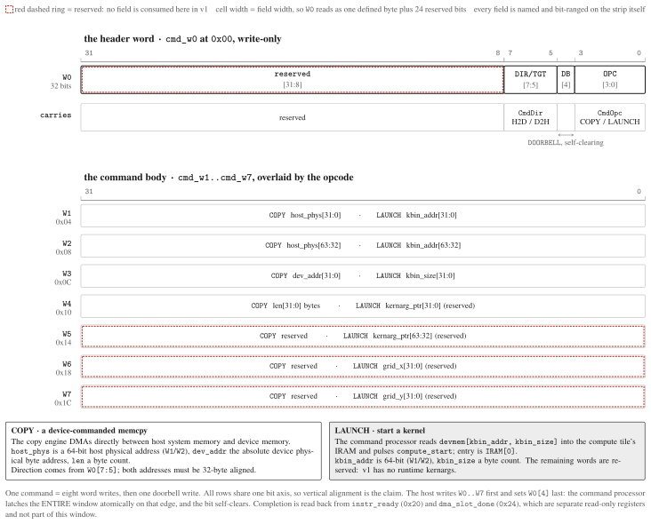

ABI: The Host Register Surface¶
The host-visible AXI-Lite register surface for driving the NPU: an encoded command
window plus read-only status. The authoritative source is mininpu/abi.py (the ABI
SSOT), which owns every offset, register name, access mode, and value semantics, and is
the module the in-repo host runtime imports. This page authors the surrounding contract;
the register-map table itself is generated from that SSOT and included below, so it
cannot drift from code.
Scope: the v1 target ABI, SSOT-side¶
The register map is the ABI as it stands in mininpu/abi.py today (ABI_VERSION 8). The
ratified ABI 7 -> 8 redesign, an encoded command window (W0..W7, 8x u32) carrying
a COPY / LAUNCH descriptor plus a self-clearing doorbell, has landed in the SSOT.
The consuming RTL (command_processor.sv plus the AXI-Lite slave rewrite) lands via the
stacked implementation change and is a scaffold at time of writing, so treat this register
map as the target host surface, not as a description of fully-wired hardware.
The encoded command window¶
The host issues one command by writing the eight command words cmd_w0..cmd_w7 (offsets
0x00..0x1C), then setting the doorbell bit in the header word. The header word cmd_w0
carries the fields [3:0] = OPC (CmdOpc), [4] = doorbell, [7:5] = DIR/TGT
(CmdDir); command_processor.sv latches on the doorbell edge and the doorbell
self-clears. The remaining words are a cmd_body overlaid two ways by the opcode:
- COPY carries
host_phys[63:0](cmd_w1/cmd_w2), the absolute device physical addressdev_addr[31:0](cmd_w3), andlen[31:0]bytes (cmd_w4). - LAUNCH carries
kbin_addr[63:0](cmd_w1/cmd_w2) andkbin_size[31:0]bytes (cmd_w3); thekernarg_ptrandgrid_x/grid_ywords are reserved ([serving]/[v3]).

Fig. 1.The encoded command window: header-word bit layout and the body overlay. The
header word cmd_w0 drawn bit by bit -- one defined byte (OPC, doorbell, DIR/TGT) plus 24
reserved bits -- over the seven body words, each labelled with both its COPY and its
LAUNCH meaning on a shared bit axis. Cell width is field width, so the strip shows the
shape of the register rather than describing it. Words with no field consumed in v1 carry the
reserved ring. Numeric CmdOpc values are not drawn: mininpu/abi.py records them as
working assignments not yet fixed by a ratified file.
The exhaustive per-mode field semantics and the doorbell handshake protocol live in the
mininpu/abi.py docstring.
Status and completion registers¶
The read-only registers report readiness and per-command completion. instr_ready
(0x20) is 1 when every sub-FSM is idle: it is both the completion signal and the
pollable-full backpressure signal. dma_slot_done (0x24) is the async-DMA slot-done
bitmask ([1:0]), cleared on flush.slot exit. copy_status / copy_cdmasr / and
launch_status (0x28 / 0x2C / 0x3C) are silicon-bring-up diagnostics for the copy
engine and the LAUNCH loader.
AXI-Lite register map¶
How to read the table¶
Rows are ordered by byte offset. All registers are 32-bit and word-aligned (byte offset
= slot x 4). The RW column is the access mode carried in the SSOT: WO (host-writable
command window) or RO (hardware status / constant). The Meaning column gives the
canonical units and a one-line role; the exhaustive per-mode length semantics and the
doorbell handshake protocol live in the mininpu/abi.py docstring.
Generated from mininpu/abi.py: ABI_VERSION 8, 13 AXI-Lite registers, all 32-bit and word-aligned. The table is derived from the SSOT, so it cannot drift from code.
| Offset | Register | Width | RW | Meaning |
|---|---|---|---|---|
0x00 |
cmd_w0 |
32 | WO |
units: cmd_header; [3:0]=OPC (CmdOpc), [4]=DOORBELL_BIT, [7:5]=DIR/TGT (CmdDir), [31:8]=rsvd; command_processor.sv latches on doorbell edge |
0x04 |
cmd_w1 |
32 | WO |
units: cmd_body; COPY host_phys[31:0] / LAUNCH kbin_addr[31:0] |
0x08 |
cmd_w2 |
32 | WO |
units: cmd_body; COPY host_phys[63:32] / LAUNCH kbin_addr[63:32] |
0x0C |
cmd_w3 |
32 | WO |
units: cmd_body; COPY dev_addr[31:0] absolute device phys addr / LAUNCH kbin_size[31:0] (bytes) |
0x10 |
cmd_w4 |
32 | WO |
units: cmd_body; COPY len[31:0] (bytes) / LAUNCH kernarg_ptr[31:0] reserved [serving] |
0x14 |
cmd_w5 |
32 | WO |
units: cmd_body; reserved / LAUNCH kernarg_ptr[63:32] reserved [serving] |
0x18 |
cmd_w6 |
32 | WO |
units: cmd_body; reserved / LAUNCH grid_x[31:0] reserved [v3] |
0x1C |
cmd_w7 |
32 | WO |
units: cmd_body; reserved / LAUNCH grid_y[31:0] reserved [v3] |
0x20 |
instr_ready |
1 | RO |
1 when all sub-FSMs idle; completion + pollable-full backpressure signal |
0x24 |
dma_slot_done |
32 | RO |
units: bitmask; async-DMA slot-done bits [1:0]; bit i=1 when the async-flagged DMA for slot i completes; cleared on flush.slot exit |
0x28 |
copy_status |
32 | RO |
units: bitmask; copy-engine per-COPY diagnostic (silicon bring-up): [0]=st_err, [1]=st_oob, [2]=st_timeout, [3]=st_done, [4]=busy, [5]=st_reset_timeout (CDMA soft-reset never self-cleared), [15:8]=transfer count |
0x2C |
copy_cdmasr |
32 | RO |
units: bitmask; copy-engine diagnostic: last CDMASR (PG034) value read during CE_POLL: bit1=Idle, bit12=IOC_Irq, bit4/5/6=DMAIntErr/SlvErr/DecErr, bit14=Err_Irq |
0x3C |
launch_status |
32 | RO |
units: bitmask; LAUNCH status (silicon bring-up): [0]=launch_error (sticky), set when the last LAUNCH was aborted because the iram_loader flagged load_error (oversize kernel clamped past IRAM_DEPTH, dropping the tail incl. HALT; or a sub-word-size kbin that loaded nothing) |
SSOT and regeneration¶
mininpu/abi.py is authoritative for the whole surface above. The table is emitted by
docs/scripts/gen_isa_abi_md.py into hardware/spec/_generated/abi_regmap.md and pulled
in here via pymdownx.snippets. Regenerate with make generate-docs-md; the drift gate
dv/test_abi_contract.py::test_generated_docs_up_to_date and the docs-md-check
pre-commit hook fail on a stale fragment.
mininpu · ABI v8 · back to index